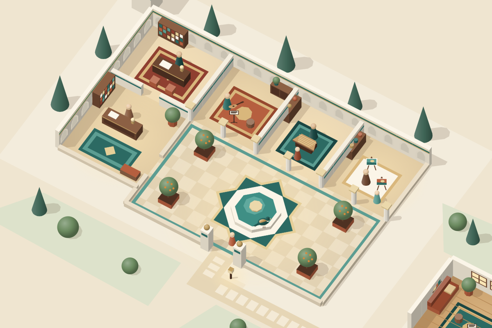
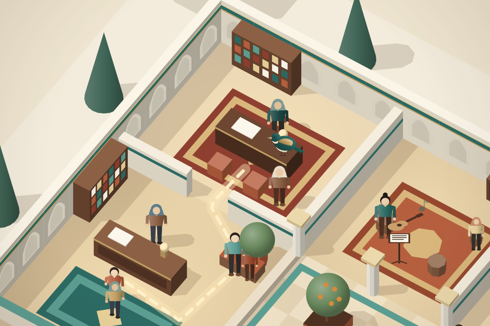
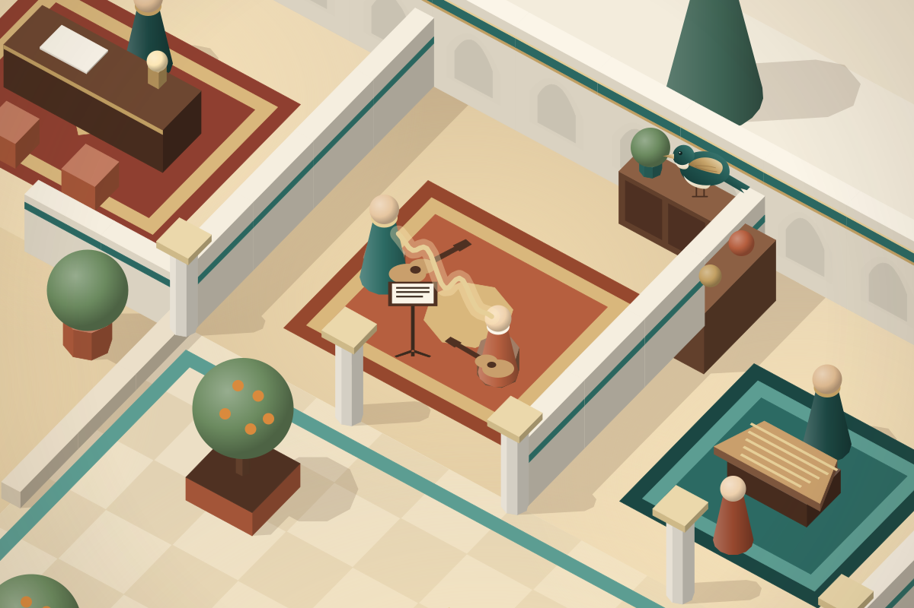
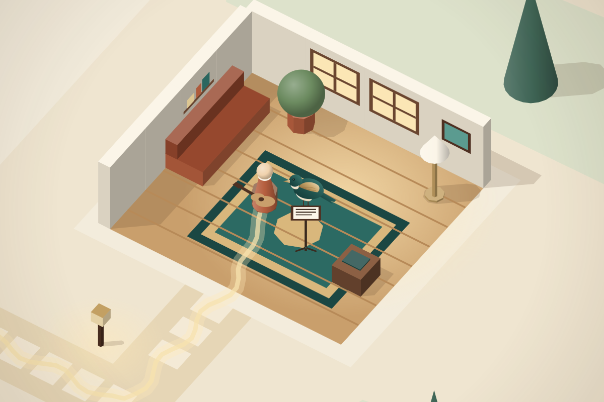
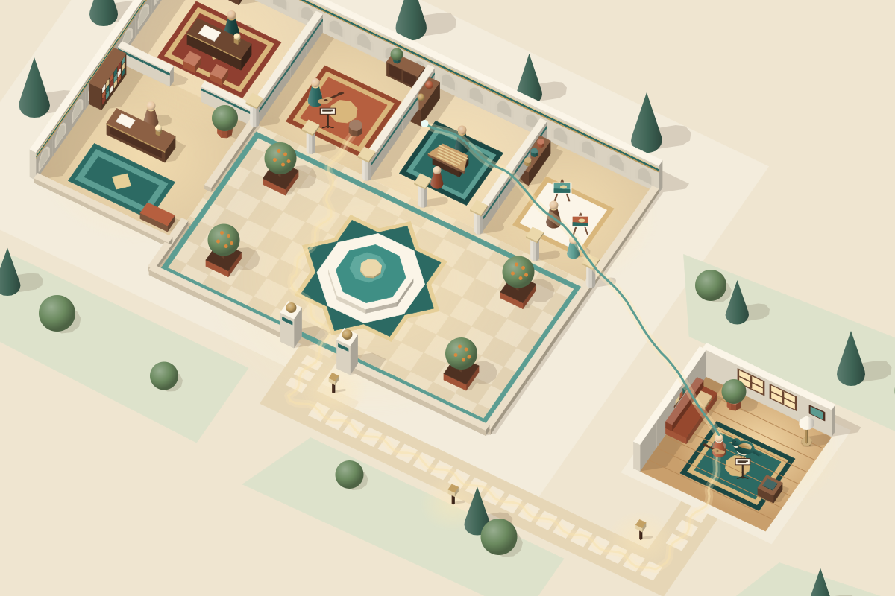
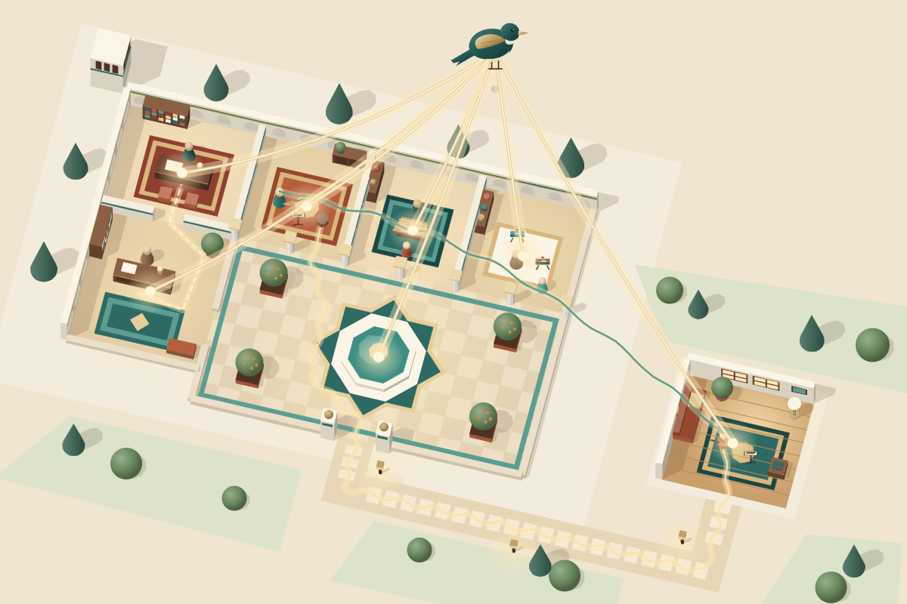

فصل ۱ از ۶ · ورود به جهان هزارآوا
جهانِ هزارآوا
اینجا، هر مسیر به یادگیری میرسد.
از آموزشگاه تا خانه، مسیر یادگیری ادامه دارد.
پایین برو و همراه هزارآوا پرواز کن.

فصل ۲ از ۶ · یک شروع هماهنگ
یک شروع هماهنگ
کلاس را انتخاب کن؛ درخواستت برای بررسی میرود.
- کلاس
- گیتار
- استاد
- به انتخاب تو
- زمان
- یکی از زمانهای آزاد
- درخواست ثبت شد
- در انتظار تأیید مدیر
- پس از تأیید: پرداخت شهریه در پرتال

فصل ۳ از ۶ · در کلاس، کنار استاد
استاد مسیر را روشن میکند.
بعد از هر جلسه، اینها در پرتال کلاس تو میمانند.
- نمونهٔ استاداجرای کوتاه همان درس، کنار نت جلسه
- تمرین تا جلسهٔ بعددقیق و مشخص، با مدت پیشنهادی
- ارزیابی جلسهچه خوب پیش رفت و چه چیزی تمرین میخواهد

فصل ۴ از ۶ · تمرین در خانه
کلاس که تمام شد، تمرین تنها نمیماند.
در خانه، هر وقت خودت بخواهی اتاق تمرین را باز میکنی.
- نمونهٔ استاد
- نت جلسه
- تکرار یک بخش
- مترونوم
- تیونر

فصل ۵ از ۶ · بازخورد استاد
هر تمرین، یک قدم روشنتر.
اجرایت را بفرست؛ استاد نظر میدهد و تمرین بعد را مشخص میکند.
- اجرای توضبط تمرین این هفته
- نظر استاد«ریتم یکدست شده؛ در بخش دوم، انگشتگذاری را آرامتر کن.»
- تمرین بعدیهمان بخش، آهسته و با مترونوم

فصل ۶ از ۶ · یک مسیر پیوسته
همهچیز، برای ادامهٔ یادگیری.
کلاس، استودیو، کافهٔ حیاط و تمرین در خانه، همه به هزارآوا وصلاند؛ همیشه همراه تو، برای یادگیری و پیشرفت.
دربارهٔ تصویرها
این آموزشگاه کوچک، با کلاسها، استودیوی ضبط و کافهٔ حیاطش، تصویرسازی خیالی برای روایت مسیر یادگیری است؛ نقشه یا عکس فضای واقعی آموزشگاه نیست. نمونههای درخواست و بازخورد هم ساختگیاند.